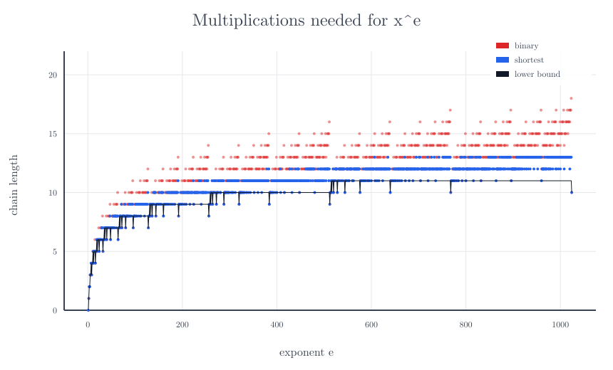
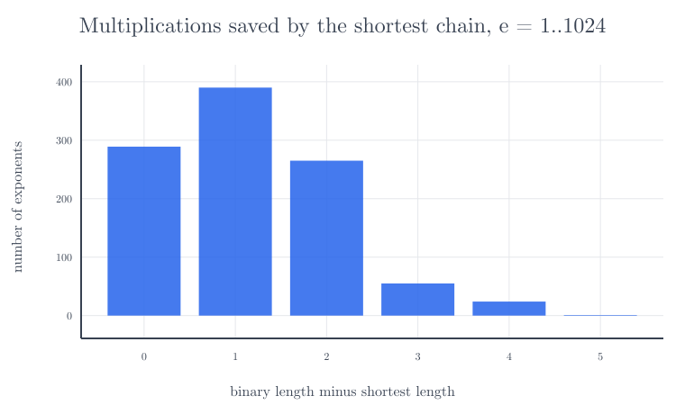
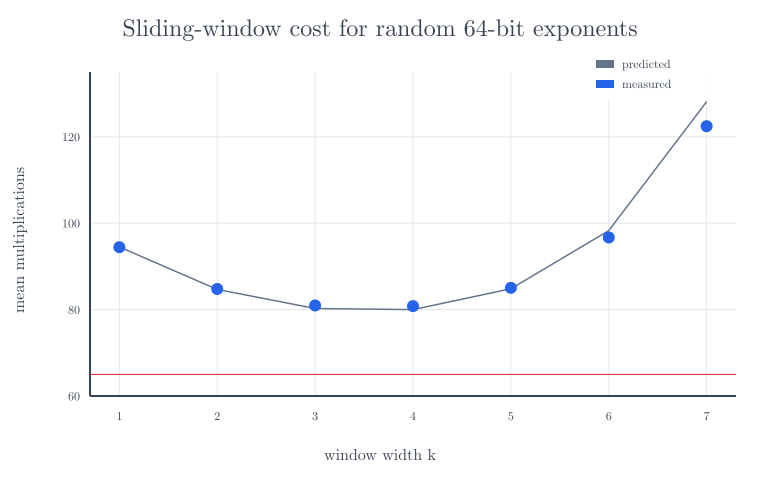

Addition Chains: How Few Multiplications Make a Power?
Abstract
Computing \(x^e\) by repeated multiplication is a question about addition chains: sequences \(1=c_0<c_1<\dots<c_L=e\) in which each term is the sum of two earlier ones. We derive the cost of the binary method, \(\lfloor\log_2 e\rfloor+\nu(e)-1\) multiplications, and prove the lower bound \(\lceil\log_2 e\rceil\). We also show the factor rule \(\ell(mn)\le\ell(m)+\ell(n)\), which explains why \(x^{15}\) needs only five multiplications. Exact shortest chains for every \(e\le 1024\) reproduce the known record values (OEIS A003064) and the Scholz-Brauer inequality. Binary is optimal for only 28% of exponents. For large exponents we derive and measure the cost of the sliding-window method. Window width 4 saves 15% over binary on 64-bit exponents, which is what cryptographic libraries do. This report has no dataset: its data are the integers themselves.
Chains and multiplications
If \(c_k=c_i+c_j\) with \(i,j<k\), then \(x^{c_k}=x^{c_i}\,x^{c_j}\) is one multiplication of powers already computed. A chain of length \(L\) ending at \(e\) therefore computes \(x^e\) in \(L\) multiplications, and the smallest such \(L\) is written \(\ell(e)\). The library offers three chains.
algorithms::binary_chain(e)is left-to-right square-and-multiply.algorithms::window_chain(e, k)is the sliding-window method.algorithms::addition_chain(e)is a shortest chain, found by iterative-deepening search for \(e\le 4096\).
mod_pow_chain() evaluates \(x^e \bmod m\) along any chain, and chain_steps()
lists which two earlier terms form each new one.
#include <dm/dm.hpp>
namespace alg = dm::algorithms;
int main() {
std::print("| e | binary chain | shortest chain | binary | shortest | lower bound |\n");
std::print("| ---: | :--- | :--- | ---: | ---: | ---: |\n");
for (std::uint64_t e : {15, 23, 31, 63, 127, 255}) {
const auto bin = alg::binary_chain(e), best = alg::addition_chain(e);
std::print("| {} | {} | {} | {} | {} | {} |\n", e, bin, best,
bin.size() - 1, best.size() - 1, alg::chain_lower_bound(e));
}
const auto best = alg::addition_chain(15);
std::print("\nSteps of the shortest chain for 15: ");
for (const auto & [i, j] : alg::chain_steps(best))
std::print("x^{} = x^{} x^{}; ", best[i] + best[j], best[i], best[j]);
std::print("\n\n3^15 mod 1000003: chain {}, mod_pow {}\n",
alg::mod_pow_chain(3, best, 1'000'003),
alg::mod_pow(3, 15, 1'000'003));
}| e | binary chain | shortest chain | binary | shortest | lower bound |
|---|---|---|---|---|---|
| 15 | [1, 2, 3, 6, 7, 14, 15] | [1, 2, 4, 5, 10, 15] | 6 | 5 | 5 |
| 23 | [1, 2, 4, 5, 10, 11, 22, 23] | [1, 2, 4, 5, 9, 18, 23] | 7 | 6 | 6 |
| 31 | [1, 2, 3, 6, 7, 14, 15, 30, 31] | [1, 2, 4, 8, 10, 20, 30, 31] | 8 | 7 | 6 |
| 63 | [1, 2, 3, 6, 7, 14, 15, 30, 31, 62, 63] | [1, 2, 4, 8, 16, 20, 21, 42, 63] | 10 | 8 | 7 |
| 127 | [1, 2, 3, 6, 7, 14, 15, 30, 31, 62, 63, 126, 127] | [1, 2, 4, 8, 16, 32, 40, 42, 84, 126, 127] | 12 | 10 | 8 |
| 255 | [1, 2, 3, 6, 7, 14, 15, 30, 31, 62, 63, 126, 127, 254, 255] | [1, 2, 4, 8, 16, 17, 34, 68, 85, 170, 255] | 14 | 10 | 9 |
Steps of the shortest chain for 15: x2 = x1 x1; x4 = x2 x2; x5 = x4 x1; x10 = x5 x5; x15 = x10 x^5;
3^15 mod 1000003: chain 348865, mod_pow 348865
Three facts with short proofs
Write \(\lambda(e)=\lfloor\log_2 e\rfloor\) and \(\nu(e)\) for the number of 1 bits of \(e\).
The binary method costs \(\lambda(e)+\nu(e)-1\). Reading the bits of \(e\) from the top, the method starts at 1 for the leading bit. Each later bit costs a doubling \(c\mapsto 2c\), and each later 1 bit also costs a \(+1\). That makes \(\lambda\) doublings and \(\nu-1\) additions.
Lower bound: \(\ell(e)\ge\lceil\log_2 e\rceil\). Every term satisfies
\(c_k\le 2c_{k-1}\), because both summands are at most \(c_{k-1}\). By induction
\(c_k\le 2^k\), so \(e=c_L\le 2^L\). If \(e\) is not a power of two, then
\(L\ge\lambda(e)+1\). The bound \(\lambda+1\) is reached only when every step
but one is a doubling. Gioia, Subbarao and Sugunamma (1962) showed that three or
more 1 bits need one step more again. chain_lower_bound() returns
Factor rule: \(\ell(mn)\le\ell(m)+\ell(n)\). Take a chain \(a_0,\dots,a_r\) for \(m\) and a chain \(b_0,\dots,b_s\) for \(n\). Then \(a_0,\dots,a_r=m,\ mb_1,\dots,mb_s=mn\) is a chain for \(mn\), because \(mb_k=mb_i+mb_j\). Its length is \(r+s\). For \(15=3\cdot 5\) this gives \(\ell(15)\le 2+3=5\), with the chain \(1,2,3,6,12,15\). Binary needs 6, since \(\lambda=3\) and \(\nu=4\). So the binary method is not optimal.
Shortest chains for every exponent up to 1024
#include <dm/dm.hpp>
namespace alg = dm::algorithms;
int main() {
std::filesystem::create_directories("build");
std::vector<double> e, best, binary, bound;
for (std::uint64_t n = 1; n <= 1024; ++n) {
e.push_back(n);
best.push_back(alg::addition_chain(n).size() - 1.0);
binary.push_back(alg::binary_chain(n).size() - 1.0);
bound.push_back(alg::chain_lower_bound(n));
}
dm::graphics::RPlot::create().points(e, binary, "binary",
dm::RGB{220, 38, 38, 0.5}, 2.0).points(
e, best, "shortest", dm::RGB{37, 99, 235}, 2.0).lines(
e, bound, "lower bound", dm::RGB{17, 24, 39}, 1.0).y_limits(0, 22).title("Multiplications needed for x^e").x_label("exponent e").y_label("chain length").size(860, 520).save_svg("build/addition_chain_lengths.svg");
}
The binary length scatters with the number of 1 bits. The optimum hugs \(\log_2 e\). The next table checks the search against two published results. The first is the smallest \(e\) with \(\ell(e)=r\), OEIS A003064. The second is the Scholz-Brauer inequality \(\ell(2^n-1)\le n-1+\ell(n)\), which has been verified for all small \(n\).
#include <dm/dm.hpp>
namespace alg = dm::algorithms;
int main() {
const std::vector<std::uint64_t> oeis{1, 2, 3, 5, 7, 11, 19, 29, 47, 71,
127, 191, 379, 607};
std::vector<std::uint64_t> first(oeis.size(), 0);
std::map<int, int> savings;
int optimal_binary = 0;
for (std::uint64_t e = 1; e <= 1024; ++e) {
const int len =
alg::addition_chain(e).size() - 1, bin =
alg::binary_chain(e).size() - 1;
if (len < int(first.size()) && first[len] == 0) first[len] = e;
++savings[bin - len];
optimal_binary += bin == len;
}
std::print("| r | smallest e with l(e) = r | OEIS A003064 |\n| ---: | ---: | ---: |\n");
for (std::size_t r = 0; r < oeis.size(); ++r)
std::print("| {} | {} | {} |\n", r, first[r], oeis[r]);
std::print("\n| n | l(2^n - 1) | n - 1 + l(n) |\n| ---: | ---: | ---: |\n");
for (int n = 2; n <= 10; ++n)
std::print("| {} | {} | {} |\n", n,
alg::addition_chain((1ULL << n) - 1).size() - 1,
n - 1 + alg::addition_chain(n).size() - 1);
std::print("\nBinary is optimal for {} of the 1024 exponents. Multiplications saved by the shortest chain: {}\n",
optimal_binary, savings);
}| r | smallest e with l(e) = r | OEIS A003064 |
|---|---|---|
| 0 | 1 | 1 |
| 1 | 2 | 2 |
| 2 | 3 | 3 |
| 3 | 5 | 5 |
| 4 | 7 | 7 |
| 5 | 11 | 11 |
| 6 | 19 | 19 |
| 7 | 29 | 29 |
| 8 | 47 | 47 |
| 9 | 71 | 71 |
| 10 | 127 | 127 |
| 11 | 191 | 191 |
| 12 | 379 | 379 |
| 13 | 607 | 607 |
| n | l(2^n - 1) | n - 1 + l(n) |
|---|---|---|
| 2 | 2 | 2 |
| 3 | 4 | 4 |
| 4 | 5 | 5 |
| 5 | 7 | 7 |
| 6 | 8 | 8 |
| 7 | 10 | 10 |
| 8 | 10 | 10 |
| 9 | 12 | 12 |
| 10 | 13 | 13 |
Binary is optimal for 289 of the 1024 exponents. Multiplications saved by the shortest chain: {0: 289, 1: 390, 2: 265, 3: 55, 4: 24, 5: 1}
#include <dm/dm.hpp>
namespace alg = dm::algorithms;
int main() {
std::filesystem::create_directories("build");
std::vector<double> counts(6, 0.0);
for (std::uint64_t e = 1; e <= 1024; ++e)
counts[alg::binary_chain(e).size() - alg::addition_chain(e).size()] +=
1;
dm::graphics::RPlot::barplot(counts, {"0", "1", "2", "3", "4", "5"}, "",
dm::RGB{37, 99, 235}).title(
"Multiplications saved by the shortest chain, e = 1..1024").x_label(
"binary length minus shortest length").y_label("number of exponents").size(760, 460).save_svg("build/addition_chain_savings.svg");
}
The typical saving is one or two multiplications. The largest saving below 1024 is five. Exponents with many 1 bits, such as \(2^n-1\), gain the most, because binary pays for every 1 bit and the shortest chain reuses blocks of bits.
Large exponents: the sliding window
The search for a shortest chain is exponential, and it is hopeless for the 64-bit exponents of modular arithmetic. The sliding-window method works there.
- Precompute the odd powers \(x^1,x^3,\dots,x^{2^k-1}\). This takes \(2^{k-1}\) multiplications: one squaring for \(x^2\), then \(+2\) steps.
- Scan \(e\) from the top. Square for every bit, and multiply by a precomputed power once per window of at most \(k\) bits that ends in a 1.
The cost for a random exponent follows. The first window is a precomputed value, so only \(\lambda-k+1\) squarings follow it. Between window starts there are \(k\) bits plus a geometric run of zeros, whose mean length is 1, so about \((\lambda+1-k)/(k+1)\) more windows follow. Hence
The middle term shrinks like \(1/k\) and the last one grows like \(2^k\). For \(\lambda=63\) the minimum is at \(k=3\) or \(4\). The figure measures 2000 random 64-bit exponents.
#include <dm/dm.hpp>
namespace alg = dm::algorithms;
int main() {
std::filesystem::create_directories("build");
dm::random::SplitMix64 rng(1);
std::vector<std::uint64_t> exponents(2000);
for (auto &e : exponents) e = rng.next_u64() | (1ULL << 63); // lambda = 63
std::vector<double> ks, measured, predicted;
for (int k = 1; k <= 7; ++k) {
double total = 0.0;
for (auto e : exponents) total += alg::window_chain(e, k).size() - 1.0;
ks.push_back(k);
measured.push_back(total / exponents.size());
predicted.push_back(k == 1 ? 63 + 31.5
: (63 - k + 1) + (64.0 - k) / (k + 1) + std::pow(
2.0, k - 1));
std::print("k = {}: mean {:.2f} multiplications, predicted {:.2f}\n", k,
measured.back(), predicted.back());
}
dm::graphics::RPlot::create().lines(ks, predicted, "predicted",
dm::RGB{100, 116, 139}, 1.5).points(
ks, measured, "measured", dm::RGB{37, 99, 235}, 6.0).abline_h(
65.0, dm::RGB{220, 38, 38}).y_limits(60, 135).title(
"Sliding-window cost for random 64-bit exponents").x_label(
"window width k").y_label("mean multiplications").size(760, 480).save_svg("build/addition_chain_windows.svg");
}k = 1: mean 94.45 multiplications, predicted 94.50 k = 2: mean 84.77 multiplications, predicted 84.67 k = 3: mean 80.96 multiplications, predicted 80.25 k = 4: mean 80.80 multiplications, predicted 80.00 k = 5: mean 85.04 multiplications, predicted 84.83 k = 6: mean 96.70 multiplications, predicted 98.29 k = 7: mean 122.45 multiplications, predicted 128.12

The approximation is within about one multiplication for \(k\le 5\). For larger \(k\) it overestimates, because the largest window value that occurs is often below \(2^k-1\), and the method only precomputes up to it. Width 4 costs about 81 multiplications against 94.5 for binary, a 15% saving. The proven lower bound of 65 leaves a gap. Brauer's asymptotic result \(\ell(e)\sim\lambda+\lambda/\log_2\lambda\) puts the true optimum near 73 for typical 64-bit exponents. The remaining room is small, and windows reach most of it at no search cost.
Summary
- Binary exponentiation costs \(\lambda+\nu-1\) multiplications. No chain can do better than \(\lceil\log_2 e\rceil\), and three 1 bits force \(\lambda+2\).
- The factor rule \(\ell(mn)\le\ell(m)+\ell(n)\) is why \(x^{15}\) takes 5 multiplications rather than 6. Up to 1024, binary is optimal for 28% of exponents and is never worse than optimal by more than five.
- An exact search reproduces OEIS A003064 and the Scholz-Brauer inequality for \(n\le 10\).
- For large exponents, sliding windows of width 3 to 4 cut binary's cost by 15%, as derived.
References
- D. E. Knuth (1997). The Art of Computer Programming, Vol. 2, 3rd ed., section 4.6.3, "Evaluation of powers".
- A. A. Gioia, M. V. Subbarao, M. Sugunamma (1962). The Scholz-Brauer problem in addition chains. Duke Mathematical Journal 29, 481--487.
- A. Brauer (1939). On addition chains. Bulletin of the AMS 45, 736--739.
- OEIS A003064: smallest number with addition chain of length n. https://oeis.org/A003064